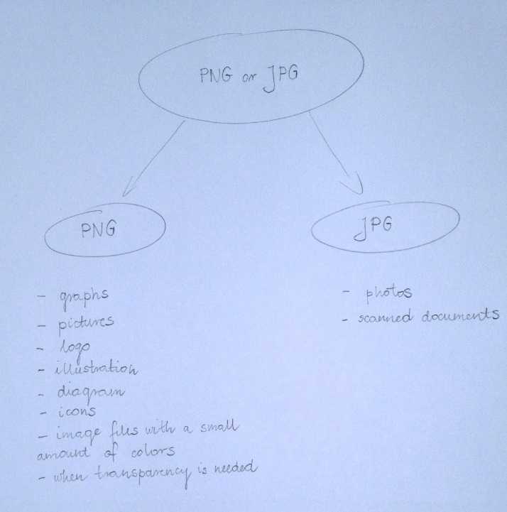
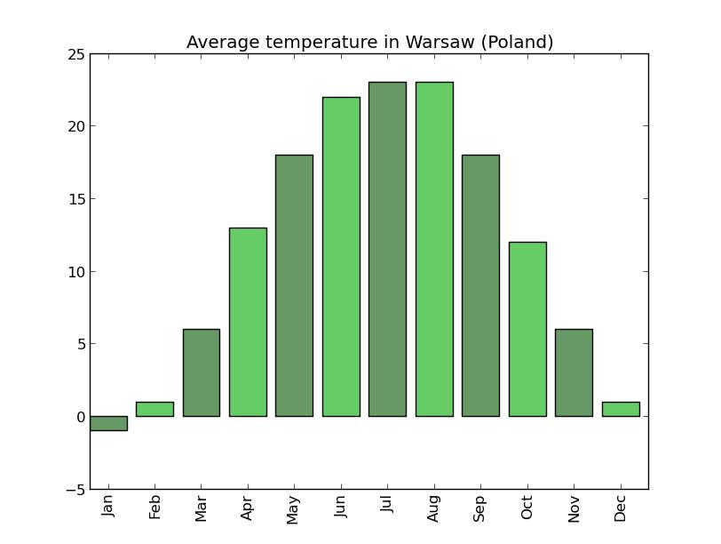
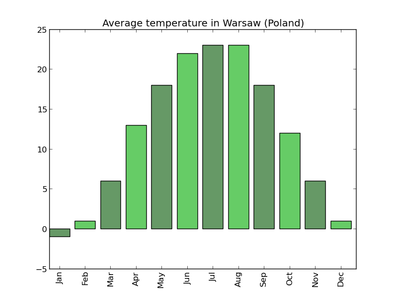

PNG or JPG (JPEG) - which format to choose?
Every day browsing the Internet we deal with images, such as photos, diagrams and charts. It is very common that images are stored in a wrong format, being displayed in a bad quality and using more space than necessary. The question is: how to choose the right format? This article will attempt to answer this question.
The picture below shows a practical, simplified application of the PNG and JPG (JPEG) image formats.
Practical application of PNG and JPG (JPEG)
Based on the picture above, the choice is really simple - photos should be stored in JPG (JPEG) and illustrations should be stored in the PNG format. Following these guidelines you will always achieve the best image quality at the same time maintaining the smallest file size possible.
Now let’s see how these guidelines apply in practice. In the following experiments we will use a photo and a chart.
In the first example you can see a photo taken with a camera and stored in JPG. The photo was then converted from JPG into PNG.

Photo stored in JPG format |
Photo stored in PNG format |
The photo stored in PNG has a significantly bigger size - in this case, it’s more than 250% of the original. The size of the photo stored in PNG will always be bigger than of JPG. The main cause of this difference is the number of colours stored in each of the formats: PNG stores all colours, while JPG “assumes” that a human eye is not able to detect differences between very similar colours, so pixels with similar colours are grouped together and assigned the same colour. This makes JPG the best format for storing photos.
In the second example you can see a chart showing monthly average temperatures in Warsaw, stored both in JPG and PNG.
|

Temperature chart stored in JPG format |

Temperature chart stored in PNG format |
Storing the chart in the PNG format allows us to save a lot of space - in this case 63%.
Another advantage of PNG is that charts can achieve much higher quality, in comparison to JPG.

Noise introduced by JPG
The picture of a zoomed-in part of a chart stored in JPG presented above, shows that this format introduces a noticeable “noise” around high-contrast areas (around the borders and near the text). These disturbance is caused by the JPG compression algorithm attempting to adjoin similar colours (the average of black and white creates grey).
Considering the quality and the file size, PNG is the best choice for storing illustrations.
Whether you are a pupil, a student (creating charts), a worker (making diagrams and presentations), a parent (trying to save your children’s first drawings and taking photos), or an online auctioneer, I hope that you will find this information useful.